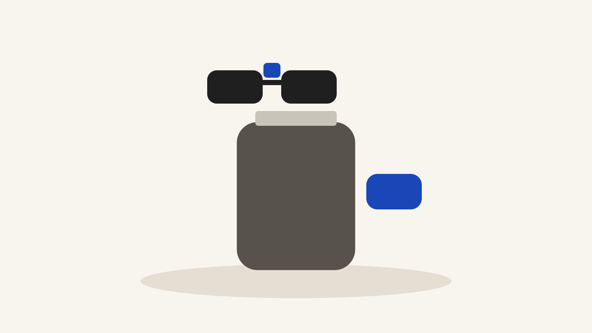

How it works
A camera on a pair of sunglasses, a laptop in a backpack and a small speaker. Point at each part to see what it does.

Drag to look around. Point at a part to learn more.
Camera
Sees the objects and hands in front of the wearer.
Pointing
Works out which object the wearer's finger is pointing at.
Laptop
Runs everything as one program, names objects and keeps a history.
Speaker
Says the object's name. The alarm interrupts everything else.
Hazard watch
Watches the camera feed for things worth a warning, on its own path.
Follow one touch
Small modules pass messages to each other. None of them calls another directly.
- The camera on the glasses streams video. Vision processes 5 frames every second.
- For each frame, Vision publishes the image, the tracked objects and the fingertip positions.
- When a new object has been steady for 1 second, Scene sends a crop of it to be named.
- Grok looks at the crop and replies with a specific name, which Scene stores on the object.
- The wearer points. After 0.4 seconds on the same object, Scene announces the touch.
- The speaker says the name, Tiger Data logs it and the dashboard highlights the object.